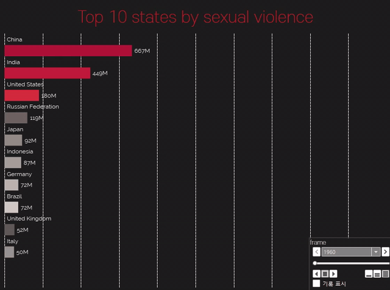
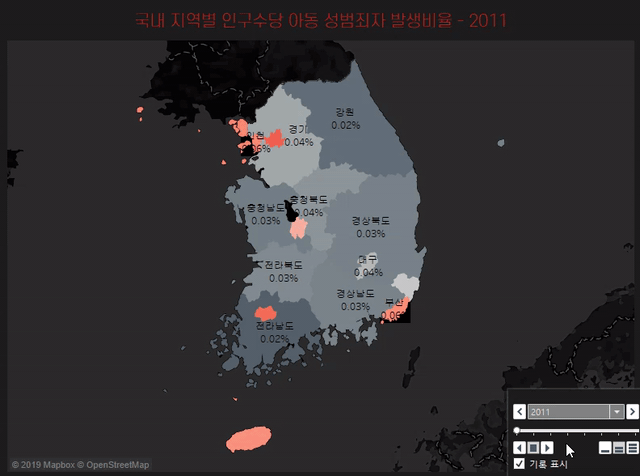
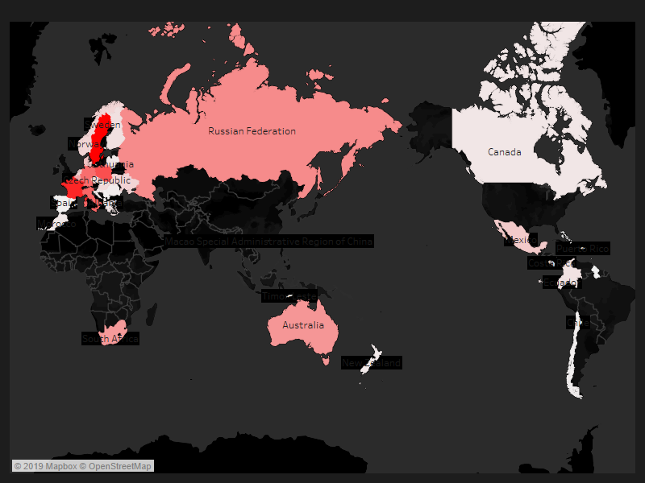
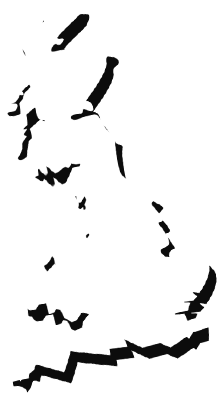
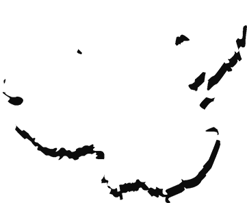

-
아동성범죄 연도별 통계
 - 통계에 따르면 2011년 국내 아동성범죄 사건은 2만 3,595건으로 나타났다. 이후 전년 대비 증감률으로는 ▲2012년(-6.25%)▲2013년(5.39%)▲2014년(-6.6%)▲2015년(8%)▲2016년(3.04%)▲2017년(5.66%)▲2018년(-1.42%) 순으로 집계됐다. 증감을 반복하면서 줄어들기는커녕 과거보다 늘어난 형국이다.
-
아동성범죄 지역별 통계
 - 지역별 아동성범죄 발생 비율로는 34.46%로 서울이 가장 위험한 지역으로 집계됐다. 이어 경기(26.37%), 부산(9.83%), 인천(8.63%), 대구(5.92%) 순으로 아동성범죄가 자주 일어나고 있었다.
-
조두순 인적사항
- click
↓ - "여자애들 어차피 나중에 다 경험하잖아"
- 출생1952년 10월 18일, 만 67세
- 직업무직
- 전과18범, 유죄선고 3건
- 범죄1983년 19세 여성 성폭행
- 1996년 노인 상해치사
- 2008 조두순 사건
- 특이사항포항교도소 수감중, 2020년 12월 13일 출소예정
- click
- 2008년 12월 11일 경기도 안산 단원구, 조두순이 등교 중이던 나영이(가명, 당시 8세)를 인근 교회 화장실로 끌고가 강간 폭행한 사건이다. 당시 조두순은 "여학생이 어차피 나중에 다 경험할 텐데. 나중에 크면 남자들 신체도 다 보고 할 것 아니냐"라는 발언으로 전 국민의 공분을 샀다.
-
검거, 재판 그리고 논란
- 재판부는 피해자에게 영구 장애를 입히는 등 죄질이 극히 불량해 무기징역을 구형하려했으나 조두순이 고령자(당시 56세), 알콜중독 등에 의한 심신장애 상태에 있음을 받아들여 12년형을 선고했다. 특히 1심 당시 조두순은 시종일관 술에 취해 기억이 나지 않는다고 주장해 화제를 모았다. 조두순의 징역이 최종 확정된 후 고작 12년형을 선고한 재판부의 판결에 대해 비난 여론이 들끓었다. 대다수 저지른 죄의 잔혹함에 비해 형량이 너무 짧다는 반응을 보였다. 여기에 검찰이 사건의 조사과정에서 "녹화가 안됐다", "녹음이 안됐다", "소리가 작다"면서 피해아동에게 무려 5번씩이나 진술을 반복하게 하는 어처구니없는 수사 과정이 대중에게 알려지면서 공분을 샀다.
-
아동성범죄 현주소

-
조두순 사건 이후 11년간, 아동성범죄와 관련된 다양한 정책이 제정·개정됐고 시행중이다. 그러나 각 정책들의 효과는 미미한 수준이다. 범죄자들도 이를 두려워하지 않듯이 끊임없이 범죄를 저지르고 있다. 관련 규정이 여전히 약한 탓일까, 아니면 법의 한계일까.
- 전자발찌 위치추적시스템 -
아동 및 상습 성폭행범에게 발찌를 착용시켜 24시간 감시하는 제도. 2007년 4월 제주 초등학생 성추행 살해사건, 2008년 3월 일산 초등학생 납치 미수사건 등을 계기로 2008년 9월 첫 시행(부착기간 최대 10년). 이후 2008년 조두순 사건, 2010년 김길태 사건 등을 계기로 부착기간이 최대 10년에서 30년으로 늘어남.
이 정책의 문제점은 전자발찌가 범죄자들에게 큰 장애물이 되지 않는 데 있다. 실제 2016년 오패산 터널 총격 사건의 범인이 전자발찌를 끊은 후 범행을 저지른 것으로 알려져 논란이 일었다. 또 2019년 6월 전자발찌를 찬 상태로 선배 약혼녀를 강간 살해한 사건도 발생해 전자발찌 실효성 논란이 확산되고 있다.
조두순법 미성년자 대상 성범죄자의 출소 후 전자발찌 부착 기간을 연장하는 것을 골자로 한 ‘특정 범죄자에 대한 보호관찰 및 전자장치 부착 등에 관한 법률 일부개정법률안’으로 2019년 3월 28일 국회를 통과하고 2019년 4월 16일부터 시행됐다. 조두순법은 재범 우려가 있는 성범죄자에 대해 '24시간 일대일' 보호관찰을 원칙으로 한다.
조두순법 역시 여러 문제를 내포하고 있다. 현재 보호관찰관 인력으로는 전자발찌 착용자들을 관리하기 어렵다는 지적이다. 전자발찌 착용자의 수는 3,000명이 넘는 반면, 이들을 관리하는 보호관찰관은 고작 200명이 전부다.
조두순법 적용자 주거지역 제한이 '재량규정'이라는 점도 문제로 꼽힌다. 조두순법은 특정인에 대한 접근금지만을 필수 준수사항으로 규정한다. 주거지역을 제한하거나 특정 시설·장소의 출입을 금지하기 위해선 별도의 법원 명령이 필요하다. 아동을 대상으로 성범죄를 저지른 범죄자가 다시 범행지역으로 돌아가 살더라도 제재할 방법이 없다.
심신미약 의무감경 개정 '김성수법' 조두순 사건 당시 가장 큰 논란이 일었던 현행 형법 제10조 2항 내용이 2018년 12월 18일 '심신장애로 인해 전항의 능력이 미약한 자의 행위는 형을 감경한다'에서 '감경할 수 있다'로 개정됐다. 이는 2018년 10월 강서구 PC방 살인 사건 이후 심신미약 감경을 폐지하라는 청와대 국민 청원이 100만 명 이상 동의를 받으면서 강화된 법안이다.
이제 심신미약 상태에 저지른 범죄는 형을 감경한다는 의무 조항 문구를 수정해 무조건 감형이 이뤄지는것이 아니라 판사의 판단에 따라 결정된다. 그러나 국민 대다수가 원하고 있는 '완전폐지'가 성사되지 않았다는 점에서 국민들의 불안감은 여전하다. -
아동성범죄 국가별 통계
 - 국가별 아동성범죄 발생 건수(2014~2017년)로는 스웨덴이 1만 6,155건으로 가장 많았다. 이어 ▲프랑스(1만 3,760건)▲폴란드(1만 1,071건)▲이탈리아(9,526건)▲독일(9,046건) 순으로 나타났다.
-
해외 아동성범죄 처벌 수위
- 미국
-
-
살인에 버금가는 중범죄로 분류한다.
주 마다 차이가 있지만 최소 20년형
부터 무기징역, 살인을 집행한다.
됐다.
앞서 2013년 미국 플로리다에서 입주 보모 22세 여성이 자신이 돌보던 11세 소년을 성폭행해 임신한 사건이 발생한 바 있다. 이 여성에게는 징역 20년형이 선고 됐다.
-
살인에 버금가는 중범죄로 분류한다.
주 마다 차이가 있지만 최소 20년형
부터 무기징역, 살인을 집행한다.
됐다.
- 
- 영국
-
- 13세 이하 미성년자에게 성범죄를 저지르면 무기징역이며,
성관계 장면을 보이기만 해도 10년형에 처하고
성범죄자의 정보를 지역 주민에게 제공한다.
대표적으로 영국 최악의 아동성범죄자 리처드허클이 있다. 그는 2006~2014년까지 200명 이상의 아동을 대상으로 성범죄를 저질러 2016년 종신형을 선고받았다.
- 13세 이하 미성년자에게 성범죄를 저지르면 무기징역이며,
성관계 장면을 보이기만 해도 10년형에 처하고
성범죄자의 정보를 지역 주민에게 제공한다.
- 
- 중국
-
-
14세 이하의 아동에게 성범죄를 저지르면 합의 없이 사형 혹은 공개처형을 집행한다.
이같은 제도에도 아동 성폭력 사건이 근절되지 않자 중국 사법당국은 미성년자 성폭행범을 잇따라 극형에 처하며 강경한 입장을 고수하고 있다.
-
14세 이하의 아동에게 성범죄를 저지르면 합의 없이 사형 혹은 공개처형을 집행한다.
아동성범죄율, 낮아질 기미가 없다
내가 살고 있는 곳이 이렇게 위험했어?
이 시대의 악마, 조두순
술에 취해서 기억이 나지 않습니다
11년이 지난 지금은?
해외는 어떨까
종신형에 공개처형까지